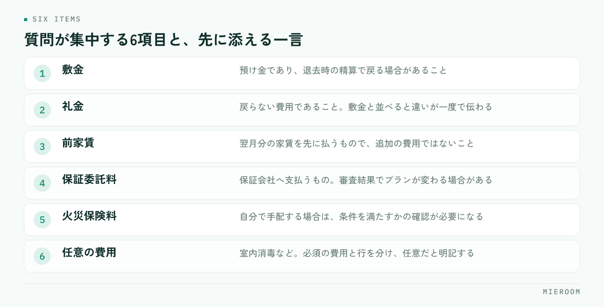

初期費用の説明に毎回時間がかかるのは、金額が高いからではありません。項目の数が多く、名前だけでは中身が分からず、どれが交渉できてどれが動かないのかが伝わっていないからです。この記事では、内訳の分け方と、お客様がつまずきやすい費目の伝え方を順に整理します。
この記事の結論
初期費用の説明は、金額を安く見せる工夫ではなく内訳を性質ごとに分けて、根拠と一緒に先に出すことで短くなります。同じ質問が毎回出るなら、説明の型が店舗で共有されていないだけです。
初期費用の説明でつまずくのは、金額そのものではない
内見後に金額を提示して、そこで話が止まる。この場面で問題になっているのは、総額の大きさよりも「何にいくら払うのか分からない」という状態です。総額だけを伝えられたお客様は、判断の材料を持てません。
内訳を渡していても、項目名が専門用語のまま並んでいると同じことが起きます。「礼金」「仲介手数料」「保証委託料」「鍵交換費」は、業界では当たり前の言葉ですが、初めて借りる方には区別がつきません。結果として「全部ひとまとめに高い」という印象だけが残ります。
説明が長くなる店舗ほど、提示の場でゼロから説明を組み立てています。逆に短く済む店舗は、説明する順番と言い回しが決まっています。差は話の上手さではなく、型があるかどうかです。
初期費用の内訳を、性質ごとに3つに分ける
項目を並べる順番を、金額の大きい順ではなく性質ごとに分けると、お客様の理解が一段速くなります。
- 契約時に貸主へ支払うもの：敷金、礼金、前家賃、日割り家賃、共益費。物件の条件で決まっており、交渉の対象になる場合もある部分です
- 契約に必要な手続きの費用：保証会社の保証委託料、火災保険料、鍵交換費、室内消毒などの任意費用。誰に支払うものかを分けて伝える必要がある部分です
- 仲介に対する費用：仲介手数料。法令で上限が定められている部分です
この3つに分けて「これは貸主へ、これは保証会社へ、これは当店へ」と支払先を示すだけで、質問の数が減ります。お客様が知りたいのは金額の内訳というより、誰に何のために払うのかだからです。
お客様がつまずきやすい項目と、その伝え方
質問が集中する項目は、ほぼ決まっています。それぞれ、先に一言添えるだけで説明が短くなります。

言い換えの例を挙げます。「敷金」は預け金であり、退去時の精算で戻る場合があること。「礼金」は戻らないこと。この2つを並べて説明すると、性質の違いが一度で伝わります。「前家賃」は翌月分の家賃を先に払うもので、追加の費用ではないこと。ここを説明しないと、家賃を二重に取られたように受け取られます。
任意の費用は、任意だと明示してください。室内消毒やハウスクリーニングの上乗せなどは、必須か任意かを曖昧にしたまま合計に入れると、あとから説明のやり直しになります。申込前に確認しておく項目の考え方は入居審査が通らない理由でも触れていますが、費用も同じで、先に出したほうが後戻りが少なくなります。
見積を出すタイミングで、説明の手間が変わる
同じ内容を伝えるのでも、出す時期によって手間がまったく違います。
| 提示のタイミング | 起きやすいこと |
|---|---|
| 物件紹介の段階で概算を出す | 予算と合わない物件を早く外せる。説明は1回で済む |
| 内見後に正式な見積を出す | 概算と差があると、その説明から始めることになる |
| 申込後に確定額を出す | 金額を理由にした取り下げが起きやすい |
おすすめは、紹介の段階で概算のレンジを先に出しておくことです。家賃に対しておおよそ何か月分になるかを伝えておけば、内見後の提示で驚かれません。ただし概算であることと、物件によって変わる項目を必ず添えてください。
概算と確定額の差が毎回大きい店舗は、どの項目が読めていないのかを洗い出す価値があります。多いのは、保証会社のプラン、火災保険の内容、鍵交換の有無、日割り家賃の起算日です。
金額が動く場面と、その伝え方
初期費用は、提示後に変わることがあります。変わる可能性を先に伝えておくかどうかで、信頼の残り方が変わります。
- 入居日が動いたとき：日割り家賃と前家賃の対象月が変わります
- 保証会社の審査結果でプランが変わったとき：保証委託料が変わる場合があります
- 火災保険を自分で手配するとき：条件を満たすかの確認が必要です
- 貸主との交渉が通ったとき：礼金やフリーレントの条件が変わります
提示時に動く可能性のある項目を伝えていないと、金額が増えたときに「話が違う」という受け取り方になります。増額の可能性がある項目は、その場で名前だけでも挙げておいてください。
説明の型を店舗でそろえる
説明の質が担当者ごとにばらつくと、同じ物件で違う金額や違う条件が伝わります。そろえるべきものは3つです。
見積の様式を1つに固定する。項目の並び順、任意費用の表記、概算か確定かの明記。様式が同じなら、担当が代わっても引き継げます。
言い換えの一覧を作る。敷金・礼金・前家賃・保証委託料・仲介手数料について、1〜2文の説明を店舗で決めておきます。新人が最初につまずくのはここで、一覧が1枚あれば同行なしでも説明できるようになります。
提示した金額を案件ごとに記録する。概算をいくらで出したか、確定額がいくらになったかを残しておくと、差が出やすい項目が見えてきます。案件の情報を1か所にまとめる考え方は申込管理表の作り方と同じで、契約書類まで同じ情報を使う流れは契約書・重説の作成時間を短くする方法にまとめています。
説明が人によって違うのは、担当者の姿勢というより、拠り所になる様式がないことが原因です。1枚そろえるだけで、注意喚起よりも早く改善します。
よくある質問
概算を先に出すと、金額で断られやすくなりませんか？
任意の費用は、見積に入れるべきですか？
説明の型は、どのくらいの粒度で決めればよいですか？
まとめ：先に出して、根拠を添える
初期費用の説明が長引くのは、金額の大きさではなく内訳の見え方の問題です。性質ごとに分けて支払先を示し、つまずきやすい費目には一言添える。概算は紹介の段階で先に出し、動く可能性のある項目は名前を挙げておく。この4つで、同じ説明を繰り返す時間はかなり減ります。
今日からできるのは、主要な費目の言い換えを1枚にまとめることです。敷金・礼金・前家賃・保証委託料・仲介手数料の5つだけでも、店舗で言い方がそろいます。
ミエルームは、申込から入金までの情報を案件ごとに1か所で持ち、一部入金や分割入金、後ADの記録にも対応しています。Excelデータの取り込みと初期設定の代行、デモアカウントの発行、最短即日でのスタートが可能です。今の様式のまま運用を整えたい段階からご相談ください。